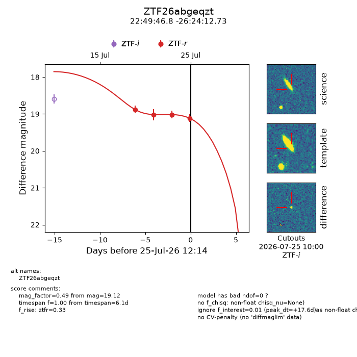
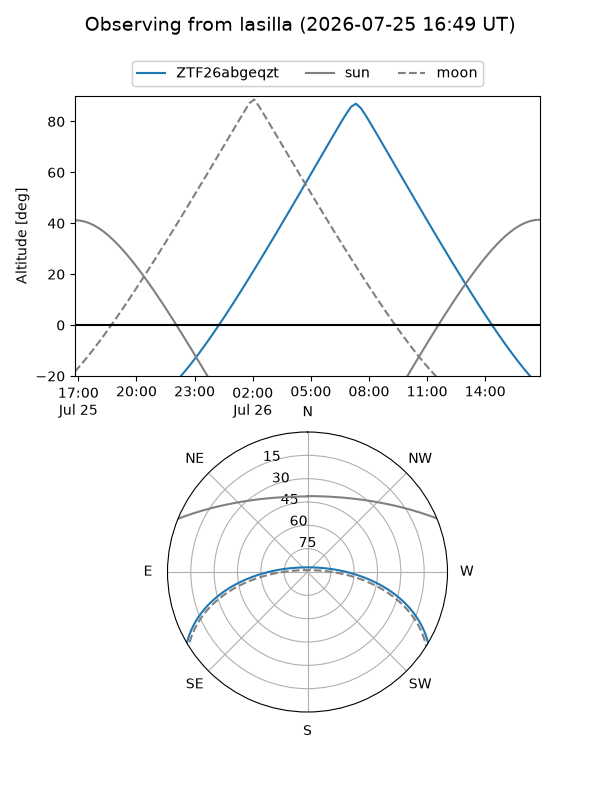
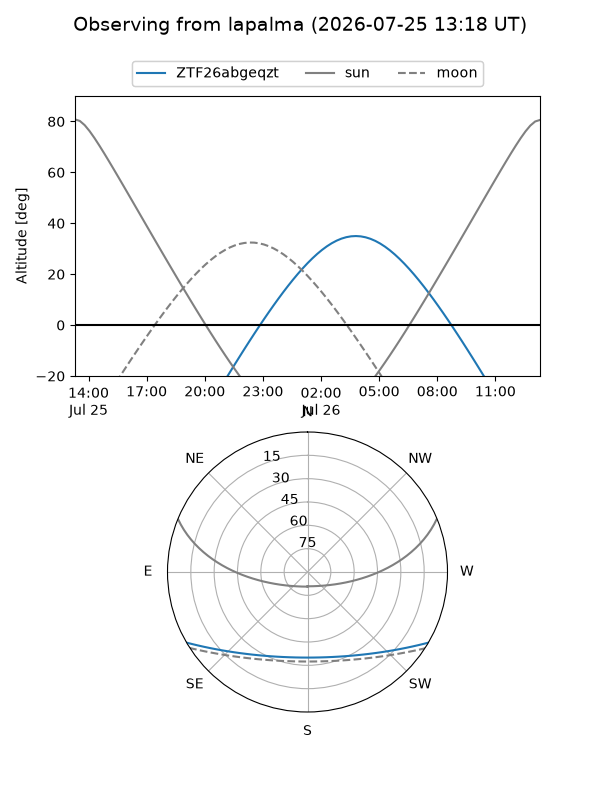
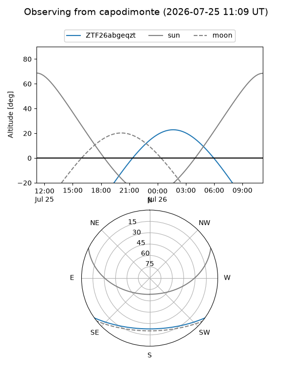
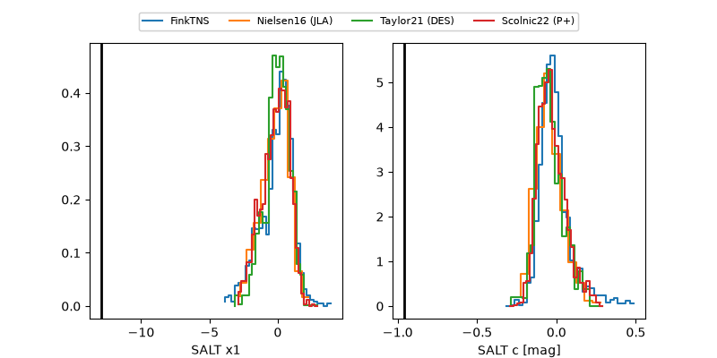

ZTF26abgeqzt
Target ZTF26abgeqzt at 2026-07-25 12:16
Aliases and brokers:
FINK-ZTF: ztf.fink-portal.org/ZTF26abgeqzt
Lasair-ZTF: lasair-ztf.lsst.ac.uk/objects/ZTF26abgeqzt
ALeRCE-ZTF: alerce.online/object/ZTF26abgeqzt
Direct TNS query: direct search
alt names
ZTF26abgeqzt (ztf,fink_ztf)
Coordinates:
equatorial (ra, dec) = 342.4450,-26.40354
equatorial (HMS+DMS) = 22:49:46.80,-26:24:12.73
galactic (l, b) = (27.4452,-62.90105)
Flags:
peak dt: +17.6
Photometry:
last ztfr=19.12
4 ztfr detections
Lightcurve

Visibility



Additional plots
